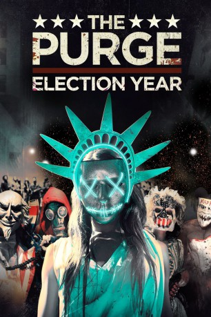

#4709 The Purge 3 - Election Year
 gesehen am 08.11.2016
gesehen am 08.11.2016
 
 IMDB-Wertung: 6.0 / 10
IMDB-Wertung: 6.0 / 10  Metascore: 0
Metascore: 0 
Zwei Jahre sind vergangen, seitdem Leo Barnes sich während der PURGE-Nacht im letzten Moment dagegen entschied, an dem Mann Rache zu üben, der Schuld am Tod seiner Tochter hatte. Es ist Wahljahr und mittlerweile arbeitet er als Sicherheitschef der Senatorin Charlie Roan. Mitten in ihrer Präsidentschaftskampagne steht die alljährliche PURGE-Nacht bevor, die ihre politischen Gegner natürlich nicht ungenutzt lassen wollen. Nach einem hinterhältigen Verrat ist die bedingungslose Jagd auf die Senatorin eröffnet und Leo hat alle Hände voll zu tun, die Senatorin aus der Schusslinie zu bringen und die Nacht zu überleben …
Jahr: 2016
Dauer: 108 Minuten
FSK: 16
Land: USA Studio: UPITonspuren: DTS - ,
Untertitel: Deutsch, Englisch,
Auflösung: 1080p (1920x800) Größe: 12697 MB
Genre: Action, Thriller, Horror, Sci-Fi
Regisseur: James DeMonaco
Drehbuch: Andrey Gavrilov
Soundtrack:
Darsteller:
 Frank Grillo als Leo Barnes
Frank Grillo als Leo Barnes Elizabeth Mitchell als Senator Charlie Roan
Elizabeth Mitchell als Senator Charlie Roan Mykelti Williamson als Joe Dixon
Mykelti Williamson als Joe Dixon Joseph Julian Soria als Marcos
Joseph Julian Soria als Marcos Betty Gabriel als Laney Rucker
Betty Gabriel als Laney Rucker Terry Serpico als Earl Danzinger
Terry Serpico als Earl Danzinger Edwin Hodge als Dante Bishop
Edwin Hodge als Dante Bishop Kyle Secor als Minister Edwidge Owens
Kyle Secor als Minister Edwidge Owens Liza Colón-Zayas als Dawn
Liza Colón-Zayas als Dawn Ethan Phillips als Chief Couper
Ethan Phillips als Chief Couper- Adam Cantor als Tall Eric Busmalis
 Christopher James Baker als Harmon James
Christopher James Baker als Harmon James- Jared Kemp als Rondo
- Brittany Mirabile als Schoolgirl #1 Freakbride / Kimmy
 Raymond J. Barry als Leader Caleb Warrens
Raymond J. Barry als Leader Caleb Warrens Tom Kemp als Drab Suited Man 2
Tom Kemp als Drab Suited Man 2- Portland Helmich als Moderator
- Roman Blat als Uncle Sam
 David Aaron Baker als Tommy Roseland
David Aaron Baker als Tommy Roseland- Johnnie Mae als Mrs. Sabian
- Tom Paolino als Axe Headed Man
- Emily Petta als Screaming Woman
- Christopher Cagle als Dante's Man
 Alexander Cook als Masked Man
Alexander Cook als Masked Man- Juani Feliz als Schoolgirl #2
- Jamal Peters als Gang Member with Dying Friend
 Matt Walton als Reporter #1
Matt Walton als Reporter #1- Christy Coco als Young Charlie Roan
- Alexander Schuler als Demonic Man
 Hank Amos als Mercenary #8
Hank Amos als Mercenary #8 Jim Ford als Homeless man
Jim Ford als Homeless man- Mel Alejandro als Rally Attendee , uncredited
 Kristen Annese als Audience Member , uncredited
Kristen Annese als Audience Member , uncredited Kt Baldassaro als Flag Face Russian Murderer , uncredited
Kt Baldassaro als Flag Face Russian Murderer , uncredited James Best als Charlie Roan's Brother , uncredited
James Best als Charlie Roan's Brother , uncredited Jim Boyd als Factory Worker , uncredited
Jim Boyd als Factory Worker , uncredited- Joe Jafo Carriere als Homeless Man , uncredited
 Chemi Che-Mponda als Homeless Woman , uncredited
Chemi Che-Mponda als Homeless Woman , uncredited Terry Conforti als Parishioner , uncredited
Terry Conforti als Parishioner , uncredited Angel Connell als Parishioner , uncredited
Angel Connell als Parishioner , uncredited Kevin DeCoste als Executioner , uncredited
Kevin DeCoste als Executioner , uncredited- Mugisha Feruzi als Dante's Men , uncredited
 Pamela Figueiredo als Electorate , uncredited
Pamela Figueiredo als Electorate , uncredited John Franchi als Homeless Vietnam Vet , uncredited
John Franchi als Homeless Vietnam Vet , uncredited- Ian Gatheca als South African Gang Member , uncredited
 Mickey Gilmore als Dante's Men #1 , uncredited
Mickey Gilmore als Dante's Men #1 , uncredited Ed Goode als Parishioner , uncredited
Ed Goode als Parishioner , uncredited Elaine Victoria Grey als NFFA Member Wife , uncredited
Elaine Victoria Grey als NFFA Member Wife , uncredited- Mark Haggett als Helicopter Pilot , uncredited
 London Hall als Charlie Roan's Mom , uncredited
London Hall als Charlie Roan's Mom , uncredited
Datei: X:\4-Tetralogie(M-Z)\Purge\Purge 3 - Election Year, The (2016, FSK16, 1920x800).mkv seit 08.11.2016
Festplatte: HD Collection-3(N-Z)-6(A-Z)
 Es gibt insgesamt 7 Filme in der Gruppe '4-Tetralogie(M-Z)\Purge'
Es gibt insgesamt 7 Filme in der Gruppe '4-Tetralogie(M-Z)\Purge'